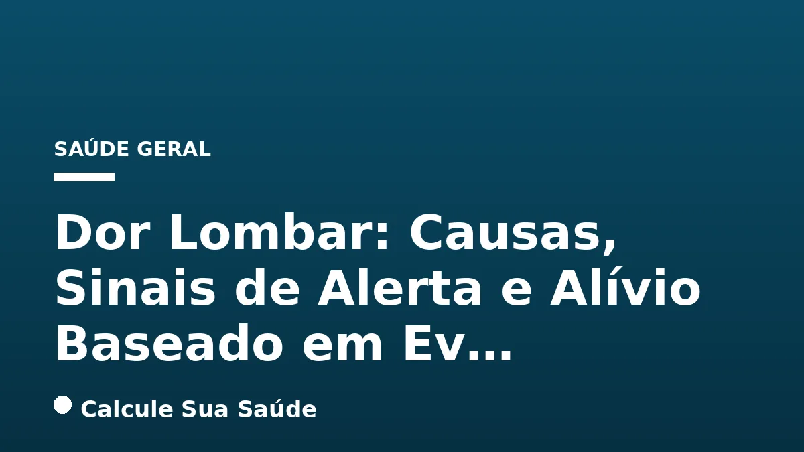

Aviso médico importante
Este conteúdo é educativo e informativo e não substitui a consulta, o diagnóstico ou o tratamento de um profissional de saúde. Em caso de sintomas, procure orientação médica.
Índice do Artigo
- 1. O Que é Dor Lombar (Lombalgia)?
- 2. Epidemiologia da Dor Lombar no Brasil
- 3. Causas e Fatores de Risco da Dor Lombar
- 4. Sintomas Associados à Dor Lombar
- 5. Diagnóstico da Dor Lombar: Abordagem Clínica
- 6. Sinais de Alerta (Red Flags): Quando Procurar Ajuda Imediata
- 7. Prevenção da Dor Lombar: Um Estilo de Vida Saudável
- 8. Tratamentos Não Farmacológicos com Respaldo Científico
- 9. Tratamentos Farmacológicos: Opções e Cuidados
- 10. Mitos Comuns Sobre a Dor Lombar vs. O Que a Ciência Diz
- 11. Quando Procurar Ajuda Médica para Dor Lombar
- 12. Exercícios para Fortalecer a Lombar e Aliviar a Dor
- 13. O Papel da Postura e Ergonomia na Prevenção
- 14. Impacto dos Fatores Psicossociais na Dor Lombar Crônica
- 15. A Importância da Atividade Física e Exercícios de Baixo Impacto
- 16. A Relação entre Obesidade, Sedentarismo e Dor Lombar
- 17. O Papel da Alimentação na Saúde da Coluna
- 18. Conclusão: Um Caminho para o Alívio e Prevenção da Dor Lombar
- 19. Perguntas frequentes
A dor lombar, popularmente conhecida como dor nas costas, é um dos desafios de saúde pública mais significativos do século XXI, sendo a principal causa de incapacidade em todo o mundo. Estimativas apontam que cerca de 80% das pessoas experimentarão esse sintoma em algum momento da vida, e no Brasil, a prevalência anual em adultos supera os 50%. Mais do que um mero incômodo, a lombalgia pode impactar profundamente a qualidade de vida, a produtividade e o bem-estar geral.
Compreender a dor lombar vai além de identificar o desconforto físico. É fundamental diferenciar seus tipos, conhecer os fatores que a desencadeiam e, principalmente, reconhecer os sinais de alerta que indicam a necessidade de uma avaliação médica imediata. Este artigo, baseado em evidências científicas e diretrizes de saúde, visa desmistificar a lombalgia, oferecendo informações precisas sobre suas causas, diagnóstico, prevenção e as opções de tratamento mais eficazes.
Nosso objetivo é empoderar você com conhecimento para gerenciar e prevenir a dor lombar, promovendo uma abordagem consciente e informada sobre a saúde da sua coluna. Lembre-se que as informações aqui contidas são para fins educativos e não substituem a consulta com um profissional de saúde qualificado.
Em resumo
- A dor lombar é um sintoma comum, não uma doença, classificada como aguda, subaguda ou crônica, sendo a maioria dos casos inespecíficos.
- Fatores de risco incluem sedentarismo, má postura, obesidade, idade, gênero feminino e tabagismo, entre outros.
- O diagnóstico é clínico, e exames de imagem só são recomendados na presença de 'sinais de alerta' (red flags).
- Sinais de alerta como febre, perda de peso inexplicada, idade extrema ou sintomas neurológicos progressivos exigem avaliação médica urgente.
- Tratamentos não farmacológicos, especialmente exercícios terapêuticos (Pilates, core stability), são a primeira linha de ação e têm forte respaldo científico.
- Muitos mitos sobre a dor lombar, como a necessidade de repouso absoluto ou a correlação direta com exames de imagem, são desmentidos pela ciência.
1. O Que é Dor Lombar (Lombalgia)?
A dor lombar, ou lombalgia, é definida como a dor localizada na região inferior das costas, especificamente entre as últimas costelas e a prega glútea. Essa dor pode ser restrita à região lombar ou irradiar para outras áreas, como as nádegas ou os membros inferiores, um quadro conhecido como ciatalgia quando afeta o nervo ciático. É crucial entender que a dor lombar não é uma doença em si, mas um sintoma que pode ter múltiplas origens.
A Organização Mundial da Saúde (OMS) e outras diretrizes clínicas categorizam a dor lombar com base em sua duração, o que é fundamental para a abordagem terapêutica e prognóstico:
- Dor Lombar Aguda: Refere-se a episódios de dor com duração inferior a 6 semanas. A maioria dos casos de dor lombar se enquadra nesta categoria e tende a resolver-se espontaneamente com medidas conservadoras.
- Dor Lombar Subaguda: Caracteriza-se por dor que persiste entre 6 e 12 semanas. Nesta fase, a dor pode indicar uma recuperação mais lenta ou a necessidade de intervenções mais direcionadas.
- Dor Lombar Crônica: É diagnosticada quando a dor persiste por mais de 12 semanas (ou 3 meses). A cronicidade da dor lombar é um desafio maior e frequentemente envolve fatores biopsicossociais complexos, exigindo uma abordagem multidisciplinar.
A grande maioria dos casos de dor lombar, cerca de 85% a 90%, é classificada como dor lombar inespecífica (ou primária). Isso significa que, mesmo após uma avaliação cuidadosa, não é possível identificar uma causa específica ou uma doença grave subjacente. Menos de 1% das queixas agudas estão associadas a condições sérias, como tumores, infecções ou fraturas. Essa distinção é vital para evitar exames desnecessários e tratamentos inadequados.
2. Epidemiologia da Dor Lombar no Brasil
A dor lombar representa um problema de saúde pública de grande magnitude no Brasil, refletindo a tendência global. É a principal causa de incapacidade em todo o mundo, e os dados nacionais confirmam a alta prevalência e o impacto significativo na população.
- Prevalência Geral: Estima-se que a prevalência anual de dor lombar em adultos no Brasil seja alta, superando 50%. Estudos realizados em 2018 e 2021 apontaram prevalências entre 59,9% e 62,6% da população.
- Dor Lombar Crônica: A prevalência de dor lombar crônica, que é a forma mais desafiadora de gerenciar, varia entre 4,2% e 14,7% da população brasileira. Um estudo específico no Brasil indicou que a prevalência de dor crônica na coluna foi de 15,5% em homens e 21,1% em mulheres.
- Impacto na Incapacidade: O impacto da lombalgia na capacidade funcional e laboral é alarmante. Em 2007, a dor lombar foi a primeira causa de invalidez entre as aposentadorias previdenciárias e acidentárias no Brasil, evidenciando o custo social e econômico dessa condição.
- Idade de Início: A média de início dos sintomas de dor lombar no Brasil gira em torno dos 35 anos, o que significa que muitos indivíduos começam a enfrentar essa condição em fases produtivas de suas vidas.
- Fatores Associados: No contexto brasileiro, fatores como baixa renda, menor escolaridade, sobrepeso, tabagismo e a presença de outras doenças crônicas estão consistentemente associados a uma maior prevalência de dor lombar. Esses dados reforçam a necessidade de abordagens de saúde pública que considerem os determinantes sociais da saúde.
3. Causas e Fatores de Risco da Dor Lombar
A dor lombar raramente tem uma única causa; na maioria das vezes, é resultado de uma interação complexa de fatores biológicos, físicos, psicológicos e sociais. As causas mecânicas são as mais comuns, respondendo por aproximadamente 97% dos casos. Compreender esses fatores é o primeiro passo para a prevenção e o manejo eficaz.
Fatores de Risco Modificáveis e Não Modificáveis:
- Estilo de Vida Sedentário: A falta de atividade física regular enfraquece a musculatura do core (abdômen, lombar e glúteos), essencial para a estabilidade da coluna vertebral, tornando-a mais vulnerável a lesões e dores. Um estilo de vida ativo, como a prática de HIIT vs Aeróbico: Mitocôndria e Saúde, pode fortalecer a musculatura e prevenir a dor.
- Má Postura e Posições Inadequadas: Permanecer por longos períodos sentado ou em posições desconfortáveis, especialmente sem o suporte adequado, aumenta a sobrecarga sobre a coluna lombar.
- Obesidade e Sobrepeso: O excesso de peso corporal, particularmente a Gordura Visceral: Perigos e Estratégias de Redução, impõe uma carga adicional significativa sobre a coluna vertebral, contribuindo para o desgaste e a dor.
- Fatores Genéticos: Embora não sejam a causa primária, a predisposição genética pode influenciar a estrutura da coluna e a suscetibilidade a certas condições degenerativas.
- Idade: A dor lombar é mais prevalente em adultos após os 30-40 anos, com a incidência aumentando em pessoas acima dos 40 anos, devido a processos degenerativos naturais. No entanto, a dor não piora necessariamente após os 60 anos.
- Gênero Feminino: Estudos indicam que a dor lombar é mais prevalente em mulheres, possivelmente devido a fatores hormonais, gestação e diferenças anatômicas.
- Tabagismo e Consumo Excessivo de Álcool: O tabagismo compromete a circulação sanguínea para os discos intervertebrais, acelerando a degeneração. O consumo excessivo de álcool, como abordado em Álcool e Fígado: Da Esteatose à Cirrose, também pode ter impactos negativos indiretos na saúde geral e na recuperação de tecidos.
- Baixo Nível Educacional e Percepção Negativa da Saúde: Fatores socioeconômicos e a forma como o indivíduo percebe sua própria saúde podem influenciar a experiência e a cronicidade da dor.
- Esforços Repetitivos e Condicionamento Físico Inadequado: Movimentos repetitivos ou levantamento de peso de forma incorreta, especialmente em ambientes de trabalho, podem sobrecarregar a coluna. Um condicionamento físico adequado é crucial para proteger a região lombar.
- Fatores Psicossociais: Estresse, ansiedade e depressão podem amplificar a percepção da dor e dificultar a recuperação. Condições como a Ansiedade: Sintomas e Quando Procurar Ajuda podem ter um impacto significativo na dor crônica.
4. Sintomas Associados à Dor Lombar
Os sintomas da dor lombar podem variar amplamente em intensidade, localização e características, dependendo da causa subjacente e da individualidade de cada paciente. É importante estar atento a essas manifestações para buscar a avaliação médica adequada.
Principais Sintomas da Lombalgia:
- Dor na Região Lombar: O sintoma mais característico é a dor na parte inferior das costas. Essa dor pode ser constante, persistindo por longos períodos, ou intermitente, aparecendo e desaparecendo em diferentes momentos. A intensidade varia de um desconforto leve a uma dor severa e incapacitante.
- Rigidez e Sensação de "Coluna Travada": Muitos indivíduos com dor lombar relatam rigidez, especialmente pela manhã ao acordar ou após longos períodos de inatividade, como ficar sentado ou deitado. Essa sensação de "coluna travada" pode dificultar os movimentos iniciais.
- Restrição dos Movimentos: A dor e a rigidez podem limitar a amplitude de movimento da coluna, tornando difícil curvar-se, torcer o tronco ou realizar atividades cotidianas simples.
- Sensação de Fraqueza na Região Lombar: Alguns pacientes podem sentir uma fraqueza localizada na parte inferior das costas, o que pode contribuir para a instabilidade e o medo de se movimentar.
- Dor Irradiada (Ciatalgia): A dor pode se estender para as nádegas, coxas ou pernas, um fenômeno conhecido como dor radicular ou ciatalgia, quando o nervo ciático é afetado. Essa dor irradiada pode ser descrita como uma queimação, pontada, choque elétrico ou até mesmo uma dor profunda e latejante.
- Alterações de Sensibilidade: A compressão nervosa pode levar a parestesias (formigamento) ou dormência nas pernas ou pés, indicando um possível envolvimento neurológico.
- Fraqueza Muscular nas Pernas: Em casos mais graves de compressão nervosa, pode ocorrer fraqueza muscular nas pernas, dificuldade para movimentar a perna ou o pé (conhecido como "pé caído"), o que exige atenção médica imediata.
É fundamental observar a natureza da dor e quaisquer sintomas associados, pois essas informações são cruciais para o diagnóstico e a definição do plano de tratamento.
5. Diagnóstico da Dor Lombar: Abordagem Clínica
O diagnóstico da dor lombar é, na vasta maioria dos casos, predominantemente clínico. Isso significa que a avaliação inicial se baseia fundamentalmente na coleta detalhada da história do paciente (anamnese) e em um exame físico minucioso. A abordagem clínica permite ao profissional de saúde identificar os padrões da dor, os fatores que a agravam ou aliviam, a presença de sintomas associados e a exclusão de condições mais graves.
A Importância da Anamnese e Exame Físico:
- História Clínica: O médico questionará sobre o início da dor, sua duração (aguda, subaguda ou crônica), intensidade, localização, características (pontada, queimação, irradiação), fatores desencadeantes e de alívio, histórico de traumas, doenças preexistentes, uso de medicamentos e estilo de vida.
- Exame Físico: Inclui a avaliação da postura, da amplitude de movimento da coluna lombar, a palpação da musculatura e das estruturas ósseas, testes neurológicos para verificar força muscular, reflexos e sensibilidade nas pernas, e manobras específicas para identificar possíveis compressões nervosas.
Quando Exames de Imagem São Necessários?
Um ponto crucial e frequentemente mal compreendido é o papel dos exames complementares de imagem, como radiografias, tomografias computadorizadas (TC) ou ressonância magnética (RM). Na maioria dos casos de dor lombar inespecífica, a solicitação precoce desses exames sem a presença de sintomas associados a condições graves não melhora o quadro clínico. Pelo contrário, pode levar a:
- Achados Inesperados: Muitas pessoas assintomáticas apresentam alterações estruturais em exames de imagem (como hérnias discais ou degeneração), que são consideradas achados normais do envelhecimento e não se correlacionam diretamente com a dor. Isso pode gerar ansiedade e levar a tratamentos desnecessários.
- Aumento de Custos e Procedimentos Invasivos: A identificação de achados "anormais" em exames de imagem pode, erroneamente, impulsionar a realização de procedimentos invasivos ou cirurgias que não seriam indicados clinicamente.
A Diretriz de Prática Clínica do Comitê Americano de Radiologia, assim como outras diretrizes internacionais, não recomenda exames radiológicos para decisão clínica a menos que haja a presença de "sinais de alerta" (red flags), que serão detalhados na próxima seção. A decisão de solicitar um exame de imagem deve ser cuidadosamente ponderada pelo médico, baseada em uma suspeita clínica fundamentada.
6. Sinais de Alerta (Red Flags): Quando Procurar Ajuda Imediata
Embora a maioria dos casos de dor lombar seja inespecífica e benigna, existem situações em que a dor pode ser um sintoma de uma condição grave subjacente, exigindo avaliação médica imediata. Esses são os chamados "sinais de alerta" ou "red flags". O reconhecimento desses sinais é crucial para um diagnóstico precoce e a intervenção adequada, que pode ser vital para a saúde do paciente.
A presença de um ou mais destes sinais não significa necessariamente uma doença grave, mas indica a necessidade de uma investigação aprofundada por um profissional de saúde.
| Sinal de Alerta | Descrição e Implicação |
|---|---|
| Idade Extrema | Dor lombar em pessoas com menos de 20 anos ou mais de 55 anos, sem causa aparente, pode indicar condições atípicas. |
| Dor Não Mecânica | Dor que não melhora com repouso, piora à noite (acordando o paciente) ou não se altera com a mudança de posição. Sugere causas inflamatórias ou sistêmicas. |
| História de Trauma | Trauma recente (queda, acidente) ou intervenções espinhais prévias, especialmente em idosos ou pacientes com osteoporose, pode indicar fraturas. |
| História de Neoplasia | Histórico prévio de câncer, pois a dor lombar pode ser um sinal de metástase óssea. |
| Emagrecimento Inexplicado | Perda de peso significativa e não intencional, que pode ser um sintoma de câncer ou infecção crônica. |
| Febre ou Sinais de Infecção | Febre, calafrios, suores noturnos ou outros sinais de infecção, que podem indicar espondilodiscite (infecção da coluna) ou abscesso. |
| Uso Crônico de Corticoides | Pacientes em uso prolongado de corticoides ou com imunossupressão, devido ao risco aumentado de osteoporose e infecções. |
| Sintomas Neurológicos Progressivos | Perda de força, dormência ou formigamento que piora progressivamente nas pernas, indicando compressão nervosa severa. |
| Perda de Controle de Esfíncteres | Incontinência urinária ou fecal (perda de controle da bexiga ou intestino) ou retenção urinária. São sintomas de síndrome da cauda equina, uma emergência médica. |
| Anestesia em Sela | Perda de sensibilidade na região perineal, glútea e interna das coxas (área que tocaria a sela de um cavalo), também um sinal de síndrome da cauda equina. |
| História de Coagulopatia ou Aneurisma | Distúrbios de coagulação ou histórico de aneurisma da aorta abdominal, que podem apresentar dor lombar como sintoma. |
| Dor Torácica | Dor que se estende para o tórax, podendo indicar problemas cardíacos ou pulmonares, ou condições da coluna torácica. |
| Sensibilidade Vertebral | Dor intensa à palpação direta sobre as vértebras, que pode indicar fratura, infecção ou tumor. |
Se você apresentar qualquer um desses sinais, procure atendimento médico imediatamente. A avaliação rápida pode prevenir complicações graves.
7. Prevenção da Dor Lombar: Um Estilo de Vida Saudável
A prevenção da dor lombar é fundamental e, na maioria dos casos, envolve a adoção de um estilo de vida saudável e a modificação de fatores de risco. Conhecer e agir sobre esses fatores é a estratégia mais eficaz para evitar o surgimento ou a recorrência da lombalgia.
Estratégias Chave para a Prevenção:
- Mantenha um Estilo de Vida Ativo: A inatividade física é um dos maiores contribuintes para a dor lombar. A prática regular de exercícios físicos fortalece a musculatura do core, melhora a flexibilidade e a postura, e ajuda a manter um peso saudável. Atividades de baixo impacto, como caminhada, natação, ciclismo e yoga, são excelentes opções.
- Fortalecimento do Core: Dedique-se a exercícios que visam fortalecer os músculos abdominais, lombares e glúteos. Um core forte atua como um "cinto natural" de suporte para a coluna vertebral, protegendo-a de sobrecargas. Exercícios como prancha, ponte glútea e alongamentos específicos são altamente recomendados.
- Mantenha um Peso Saudável: O excesso de peso, especialmente a obesidade, aumenta a carga sobre a coluna lombar, acelerando o desgaste e contribuindo para a dor. Manter um peso corporal adequado através de uma dieta equilibrada e exercícios é crucial.
- Adote uma Postura Correta: Conscientize-se da sua postura ao sentar, ficar em pé e levantar objetos. Ao sentar, use cadeiras com bom suporte lombar, mantenha os pés apoiados no chão e evite cruzar as pernas. Ao levantar peso, curve os joelhos, mantenha a coluna reta e use a força das pernas, não das costas.
- Evite Esforços Repetitivos e Movimentos Incorretos: Esteja atento a movimentos que possam sobrecarregar a coluna, como torcer o tronco bruscamente ou levantar objetos pesados de forma inadequada. Se seu trabalho exige movimentos repetitivos, faça pausas regulares e utilize técnicas ergonômicas.
- Pare de Fumar: O tabagismo prejudica a circulação sanguínea para os discos intervertebrais, comprometendo sua nutrição e acelerando a degeneração. Parar de fumar é uma medida importante para a saúde da coluna e geral.
- Gerencie o Estresse: O estresse crônico pode levar à tensão muscular e aumentar a percepção da dor. Técnicas de relaxamento, meditação e outras estratégias de manejo do estresse podem ser benéficas.
- Durma Bem: Um colchão e travesseiro adequados, que ofereçam suporte à curvatura natural da coluna, são importantes para um sono reparador e para evitar dores matinais.
8. Tratamentos Não Farmacológicos com Respaldo Científico
Para a maioria dos casos de dor lombar, especialmente a inespecífica e crônica, as diretrizes clínicas recomendam fortemente intervenções não farmacológicas e não cirúrgicas como primeira linha de tratamento. Essas abordagens focam na reabilitação, no fortalecimento e na educação do paciente, com evidências robustas de eficácia.
Exercícios Terapêuticos: A Base do Tratamento
Os exercícios são amplamente recomendados e considerados a opção mais eficaz para a dor lombar crônica. A evidência de certeza moderada sugere que exercícios reduzem a dor e melhoram a incapacidade em comparação com nenhum tratamento, cuidados habituais ou placebo.
- Dor Lombar Crônica: Exercícios de estabilidade do core (abdômen, lombar e glúteos) são mais eficazes do que treinos gerais na redução da dor e melhora da função. Pilates e restauração funcional demonstraram maior redução da dor e limitações funcionais em comparação com outras categorias de exercícios (evidência de baixa a moderada certeza).
- Exemplos de Exercícios: Prancha, alongamentos específicos para a coluna e músculos adjacentes, e ponte glútea são exemplos de exercícios que fortalecem o core e melhoram a mobilidade. A regularidade e a execução correta são cruciais.
Outras Terapias Não Farmacológicas:
- Acupuntura: Provavelmente proporciona uma pequena, mas significativa, melhora na função e redução da dor em pacientes com dor lombar crônica (evidência de certeza moderada).
- Terapias Multidisciplinares: Abordagens que combinam diferentes modalidades (fisioterapia, terapia ocupacional, psicologia) provavelmente proporcionam uma redução média na intensidade da dor e uma pequena melhora na função (evidência de certeza moderada), especialmente para a dor crônica.
- Terapias Psicológicas: Abordagens operantes, como a terapia cognitivo-comportamental, podem proporcionar uma pequena redução na intensidade da dor, atuando na percepção e no manejo da dor (evidência de certeza moderada).
- Termoterapia (Calor): A aplicação de calor pode resultar em alívio temporário da dor e relaxamento muscular (evidência de certeza moderada para vermelhidão da pele, mas evidências insuficientes para eficácia a longo prazo na dor crônica).
- Manipulação Espinhal: Para dor lombar aguda/subaguda, a manipulação espinhal provavelmente não apresenta diferença significativa na função em comparação com placebo (evidência de certeza moderada). Seus efeitos são mais relacionados a respostas fisiológicas de analgesia do que a "colocar algo no lugar".
- Ultrassom Terapêutico (UST) e Estimulação Elétrica Nervosa Transcutânea (EENT): Não apresentaram eficácia comprovada no tratamento da dor lombar crônica (evidências insuficientes). Esses tratamentos passivos não oferecem benefício a longo prazo e não tratam o problema subjacente.
9. Tratamentos Farmacológicos: Opções e Cuidados
Os tratamentos farmacológicos para a dor lombar devem ser utilizados com cautela e sob orientação médica, especialmente devido aos potenciais efeitos adversos e à falta de eficácia em longo prazo para muitos medicamentos. A escolha do fármaco depende do tipo e da intensidade da dor, bem como das condições de saúde do paciente.
Principais Classes de Medicamentos:
- Anti-inflamatórios Não Esteroides (AINEs):
Para dor lombar aguda, há evidência de qualidade moderada de que AINEs são ligeiramente mais eficazes que o placebo para diminuir a dor no curto prazo, e evidência de alta qualidade para diminuir a incapacidade. No entanto, a magnitude do efeito é muito pequena. Para dor lombar crônica, podem reduzir a dor (evidência de baixa certeza). Podem apresentar riscos gastrointestinais, cardiovasculares e renais, e o uso desregulado pode prolongar a dor. - Relaxantes Musculares:
Podem proporcionar pequenos benefícios na dor lombar aguda no curto prazo (evidência de certeza moderada), mas podem estar associados a efeitos indesejáveis como sonolência e tontura. Para dor lombar crônica, a evidência é de baixa certeza para um pequeno efeito na dor e não há evidência clara de aumento do risco de eventos adversos. Antiespasmódicos não benzodiazepínicos podem aumentar o risco de eventos adversos. Benzodiazepínicos devem ser evitados devido ao potencial de dependência e efeitos colaterais. - Paracetamol:
Não demonstrou efeito claro na dor ou nos efeitos indesejáveis para dor lombar aguda (evidência de alta qualidade). Para dor lombar crônica, há confiança moderada nos efeitos a curto prazo, mas geralmente é menos eficaz que os AINEs. - Opioides:
Podem reduzir a dor na dor lombar crônica, mas devem ser usados com extrema cautela devido ao alto potencial de dependência, tolerância e efeitos indesejáveis significativos (evidência de baixa a alta certeza). Não são recomendados como primeira linha de tratamento. - Antidepressivos:
Antidepressivos tricíclicos, duloxetina e venlafaxina são considerados de primeira linha para dor neuropática. Para dor lombar crônica, podem fazer pouca ou nenhuma diferença na dor, mas podem ser úteis em casos de dor crônica associada à depressão ou ansiedade. - Anticonvulsivantes:
Gabapentina pode ser indicada para dor lombar crônica em grupos específicos de pacientes (estenose espinhal, claudicação neurogênica, dor radicular) quando não há resposta a tratamentos iniciais. Outros anticonvulsivantes não são formalmente recomendados devido à evidência limitada. - Corticosteroides:
Não são indicados no tratamento da dor lombar, especialmente para uso repetitivo, devido aos efeitos adversos relevantes, como osteoporose, aumento de peso e supressão adrenal.
A automedicação é perigosa. Sempre consulte um médico para a prescrição e acompanhamento adequados dos medicamentos.
10. Mitos Comuns Sobre a Dor Lombar vs. O Que a Ciência Diz
A dor lombar é cercada por muitos mitos e crenças populares que, frequentemente, não encontram respaldo na ciência e podem até prejudicar a recuperação. Desmistificar essas ideias é essencial para uma abordagem eficaz e baseada em evidências.
Desvendando os Mitos:
- Mito 1: O exame de imagem sempre explica a dor.
Fato: Na maioria das vezes, não há correlação direta entre um exame radiológico (RM, TC) e o sintoma de dor. Muitas pessoas assintomáticas apresentam alterações estruturais como hérnias discais ou degeneração em exames de imagem. A Diretriz de Prática Clínica do Comitê Americano de Radiologia não recomenda exames radiológicos para decisão clínica, a menos que haja sinais de alerta. - Mito 2: Repouso absoluto irá melhorar a dor nas costas.
Fato: Provavelmente não. O repouso absoluto pode prolongar ou agravar a dor, causando rigidez muscular, perda de condicionamento físico e até mesmo atrofia muscular. É recomendado modificar atividades e optar por exercícios de baixo impacto, mantendo-se ativo dentro dos limites da dor. - Mito 3: Levantar objetos pesados é a principal causa de dor nas costas.
Fato: Levantar objetos pesados com postura incorreta pode contribuir para a dor, mas os principais responsáveis são o estilo de vida sedentário, má postura, obesidade e fatores genéticos. A forma como se levanta é mais importante do que o peso em si. - Mito 4: Dor na coluna é normal.
Fato: Ter um episódio de dor lombar aguda é comum (até 80% da população), mas não é normal que a dor persista por muito tempo ou cause limitação significativa. A maioria das pessoas se recupera em poucas semanas. Dor persistente requer investigação. - Mito 5: Cirurgia é sempre necessária para dor lombar.
Fato: Uma pequena parcela de pessoas necessita de cirurgia. Em média, os resultados da cirurgia de coluna a médio e longo prazo não são melhores do que as intervenções não-cirúrgicas, como o exercício físico e a fisioterapia. A cirurgia é reservada para casos específicos e graves. - Mito 6: Ficar "avisando" as pessoas para melhorar a postura, contrair a barriga ou mexer o core traz benefícios.
Fato: Não há evidências claras de que isso traga benefícios e, pior, pode levar à hipervigilância e ansiedade, o que pode agravar os sintomas. A educação sobre ergonomia e exercícios é mais eficaz do que a correção constante da postura. - Mito 7: Colchões mais duros são melhores.
Fato: Evidências científicas mostram que não é exatamente assim. Um colchão muito duro pode não se adaptar às curvas naturais da coluna, enquanto um muito macio pode não oferecer suporte adequado. O ideal é um colchão que ofereça suporte firme, mas que se adapte ao corpo. - Mito 8: A dor piora com a idade.
Fato: Uma revisão de estudos concluiu que a dor não piora necessariamente após os 60 anos. Embora a prevalência possa aumentar em certas faixas etárias, a dor não é uma consequência inevitável do envelhecimento. A Longevidade e Zonas Azuis: Centenários mostra que um estilo de vida ativo pode mitigar muitos problemas associados à idade. - Mito 9: Dor na coluna significa que algo está "fora do lugar".
Fato: Não existe comprovação de que a dor esteja relacionada a algum osso ou articulação "fora do lugar". O alívio após manipulação é devido a outras respostas fisiológicas que promovem analgesia, como relaxamento muscular e modulação da dor. - Mito 10: Ultrassom e estimulação elétrica ajudam na recuperação.
Fato: Esses tratamentos passivos não oferecem benefício a longo prazo, não tratam o problema subjacente e não aceleram o tempo de cura da dor lombar crônica. O foco deve ser em terapias ativas e educação.
11. Quando Procurar Ajuda Médica para Dor Lombar
Embora a maioria dos episódios de dor lombar aguda se resolva espontaneamente em algumas semanas, é fundamental saber quando buscar avaliação médica. A intervenção precoce em casos específicos pode prevenir complicações e garantir um tratamento adequado.
Procure um Médico Se:
- A dor é intensa e não melhora com repouso ou medidas simples: Se a dor for incapacitante ou persistir por mais de alguns dias sem alívio, é hora de procurar um profissional.
- Você apresenta qualquer um dos "sinais de alerta" (red flags): Como discutido anteriormente, febre, perda de peso inexplicada, dormência progressiva, fraqueza nas pernas, incontinência urinária ou fecal, ou dor que piora à noite são motivos para uma consulta de emergência.
- A dor irradia para as pernas e causa dormência ou fraqueza: Sintomas de ciatalgia com comprometimento neurológico (parestesia, fraqueza muscular) indicam a necessidade de avaliação para descartar compressão nervosa significativa.
- Você tem histórico de câncer, osteoporose ou uso de corticoides: Essas condições aumentam o risco de causas mais graves para a dor lombar.
- A dor é resultado de um trauma: Quedas, acidentes ou lesões diretas na coluna exigem avaliação para descartar fraturas.
- Você tem mais de 55 anos ou menos de 20 anos e a dor não tem causa aparente: A dor lombar nessas faixas etárias pode ter causas menos comuns e necessita de investigação.
- A dor se torna crônica: Se a dor persistir por mais de 12 semanas, mesmo que não haja sinais de alerta, a avaliação médica é importante para estabelecer um plano de tratamento para a dor crônica.
- Você tem dúvidas ou preocupações: Em caso de incerteza sobre a gravidade da sua dor, é sempre melhor consultar um médico para obter um diagnóstico preciso e orientação.
Um profissional de saúde poderá realizar um exame físico, avaliar seu histórico e, se necessário, solicitar exames complementares para determinar a causa da dor e indicar o tratamento mais apropriado.
12. Exercícios para Fortalecer a Lombar e Aliviar a Dor
Os exercícios terapêuticos são a pedra angular do tratamento e prevenção da dor lombar, especialmente a crônica. O fortalecimento da musculatura do core (abdômen, lombar e glúteos) e a melhora da flexibilidade são cruciais para estabilizar a coluna e reduzir a sobrecarga. É fundamental realizar os exercícios corretamente e, idealmente, sob orientação de um fisioterapeuta ou profissional de educação física.
Exercícios Recomendados para a Lombar:
1. Prancha (Plank):
- Como fazer: Deite-se de bruços no chão. Apoie-se nos antebraços e nas pontas dos pés, elevando o corpo de forma que ele forme uma linha reta da cabeça aos calcanhares. Mantenha o abdômen contraído e evite que o quadril caia ou se eleve demais.
- Benefícios: Fortalece intensamente o core, incluindo os músculos abdominais e lombares, sem sobrecarregar a coluna.
2. Ponte Glútea (Glute Bridge):
- Como fazer: Deite-se de costas com os joelhos flexionados e os pés apoiados no chão, próximos aos glúteos. Mantenha os braços estendidos ao lado do corpo. Eleve o quadril do chão, contraindo os glúteos, até que o corpo forme uma linha reta dos ombros aos joelhos. Mantenha por alguns segundos e retorne lentamente.
- Benefícios: Fortalece os glúteos e a musculatura posterior da coxa, que são importantes para o suporte da coluna lombar.
3. Alongamento do Gato-Camelo (Cat-Cow Stretch):
- Como fazer: Posição de quatro apoios (mãos e joelhos no chão). Ao inspirar, arqueie a coluna para baixo, elevando a cabeça e o quadril (posição do camelo). Ao expirar, arredonde a coluna para cima, abaixando a cabeça e o quadril (posição do gato).
- Benefícios: Melhora a mobilidade da coluna vertebral, alonga os músculos das costas e do abdômen, e alivia a rigidez.
4. Alongamento da Coluna Lombar (Knee-to-Chest Stretch):
- Como fazer: Deite-se de costas com as pernas esticadas. Flexione um joelho e traga-o em direção ao peito, segurando com as mãos. Mantenha a outra perna esticada no chão. Mantenha o alongamento por 20-30 segundos e repita com a outra perna.
- Benefícios: Alonga os músculos da região lombar e glúteos, aliviando a tensão.
5. Bird-Dog:
- Como fazer: Posição de quatro apoios. Estenda um braço para frente e a perna oposta para trás, mantendo o tronco estável e a coluna neutra. Evite arquear as costas. Mantenha por alguns segundos e retorne. Alterne os lados.
- Benefícios: Fortalece o core, melhora o equilíbrio e a coordenação, e estabiliza a coluna.
Comece com poucas repetições e aumente gradualmente à medida que sua força e flexibilidade melhoram. Se sentir dor durante qualquer exercício, pare e consulte um profissional.
13. O Papel da Postura e Ergonomia na Prevenção
A postura e a ergonomia desempenham um papel crucial tanto na prevenção quanto no manejo da dor lombar. A maneira como nos sentamos, ficamos em pé, levantamos objetos e até dormimos pode influenciar diretamente a saúde da nossa coluna vertebral. Pequenos ajustes no dia a dia podem fazer uma grande diferença.
Postura Correta no Dia a Dia:
- Ao Sentar: Mantenha os pés apoiados no chão ou em um apoio, com os joelhos em um ângulo de 90 graus. A coluna deve estar ereta, com a parte inferior das costas apoiada no encosto da cadeira (se necessário, use uma almofada lombar). Evite cruzar as pernas e faça pausas regulares para se levantar e caminhar.
- Ao Ficar em Pé: Distribua o peso igualmente entre os dois pés. Mantenha os ombros relaxados e ligeiramente para trás, com a cabeça alinhada com a coluna. Evite ficar em pé por longos períodos; se for inevitável, alterne o apoio do peso entre as pernas ou use um pequeno apoio para um dos pés.
- Ao Levantar Objetos: A técnica correta é fundamental. Aproxime-se do objeto, flexione os joelhos e os quadris, mantendo a coluna reta. Use a força das pernas para levantar, mantendo o objeto próximo ao corpo. Evite torcer o tronco enquanto levanta.
- Ao Dormir: Escolha um colchão que ofereça suporte adequado e um travesseiro que mantenha a cabeça e o pescoço alinhados com a coluna. Dormir de lado com um travesseiro entre os joelhos ou de costas com um travesseiro sob os joelhos pode ajudar a manter a curvatura natural da coluna.
Ergonomia no Ambiente de Trabalho:
Para aqueles que passam longas horas sentados, a ergonomia do posto de trabalho é vital:
- Cadeira: Deve ter ajuste de altura, encosto com suporte lombar e braços.
- Mesa: A altura deve permitir que os braços formem um ângulo de 90 graus ao digitar, com os ombros relaxados.
- Monitor: A parte superior da tela deve estar na altura dos olhos, a uma distância de um braço.
- Teclado e Mouse: Devem estar próximos ao corpo para evitar esticar os braços.
A conscientização sobre a postura e a ergonomia não significa hipervigilância, mas sim a adoção de hábitos saudáveis que protegem a coluna da sobrecarga diária.
14. Impacto dos Fatores Psicossociais na Dor Lombar Crônica
A dor lombar, especialmente quando se torna crônica, não é apenas um fenômeno físico. Fatores psicossociais desempenham um papel significativo na sua percepção, intensidade e duração. A compreensão dessa interação é crucial para um tratamento eficaz e holístico.
Como Fatores Psicossociais Influenciam a Dor:
- Estresse: O estresse crônico pode levar à tensão muscular constante, especialmente na região lombar e cervical. Essa tensão prolongada pode causar dor ou agravar uma dor preexistente. Além disso, o estresse altera a forma como o cérebro processa os sinais de dor, tornando-os mais intensos.
- Ansiedade: Pessoas com Ansiedade: Sintomas e Quando Procurar Ajuda frequentemente experimentam maior sensibilidade à dor. A preocupação constante com a dor, o medo de se movimentar (cinesiofobia) e a catastrofização (pensamentos exagerados sobre a gravidade da dor) podem criar um ciclo vicioso que perpetua a lombalgia.
- Depressão: A depressão e a dor crônica estão intimamente ligadas. A dor crônica pode levar à depressão, e a depressão, por sua vez, pode diminuir o limiar de dor e dificultar a recuperação. A falta de motivação e o isolamento social associados à depressão podem reduzir a adesão a tratamentos ativos, como exercícios.
- Fatores Sociais e Ocupacionais: A insatisfação no trabalho, a falta de apoio social, problemas financeiros e a percepção de injustiça podem influenciar a experiência da dor e a capacidade de lidar com ela. Ambientes de trabalho estressantes ou a falta de flexibilidade podem agravar a situação.
- Crenças e Expectativas: As crenças do paciente sobre a dor (por exemplo, que a dor significa dano permanente, que o repouso é a única solução) e suas expectativas sobre o tratamento podem impactar diretamente o resultado. Uma percepção negativa da saúde e a falta de esperança podem dificultar a recuperação.
Abordagens Terapêuticas:
Considerando o impacto desses fatores, as terapias multidisciplinares que incluem componentes psicológicos, como a terapia cognitivo-comportamental (TCC), são altamente recomendadas para a dor lombar crônica. Essas abordagens ajudam os pacientes a:
- Reinterpretar a dor e reduzir o medo associado.
- Desenvolver estratégias de enfrentamento e relaxamento.
- Melhorar o humor e a qualidade de vida.
- Aumentar a adesão a programas de exercícios e reabilitação.
Tratar a dor lombar crônica exige uma visão integral do paciente, reconhecendo que a mente e o corpo estão intrinsecamente conectados.
15. A Importância da Atividade Física e Exercícios de Baixo Impacto
A atividade física regular é um dos pilares mais importantes na prevenção e tratamento da dor lombar. Ao contrário da crença popular de que o repouso é a melhor solução, a ciência demonstra que o movimento e o fortalecimento muscular são essenciais para a saúde da coluna. Exercícios de baixo impacto são particularmente benéficos, pois fornecem os benefícios do movimento sem sobrecarregar excessivamente as estruturas vertebrais.
Por Que a Atividade Física é Crucial?
- Fortalecimento Muscular: Exercícios fortalecem os músculos do core (abdômen, lombar e glúteos), que atuam como um suporte natural para a coluna. Músculos fortes ajudam a manter a postura correta e a absorver choques, protegendo os discos e as articulações.
- Melhora da Flexibilidade: O alongamento regular e os exercícios de mobilidade ajudam a manter a flexibilidade da coluna e dos músculos adjacentes, reduzindo a rigidez e a tensão que podem contribuir para a dor.
- Melhora da Circulação: A atividade física aumenta o fluxo sanguíneo para os tecidos da coluna, incluindo os discos intervertebrais, promovendo a nutrição e a cicatrização.
- Controle de Peso: Manter um peso saudável reduz a carga sobre a coluna, diminuindo o risco de dor e degeneração.
- Liberação de Endorfinas: O exercício estimula a liberação de endorfinas, que são analgésicos naturais do corpo, ajudando a reduzir a percepção da dor.
- Redução do Estresse: A atividade física é uma excelente ferramenta para gerenciar o estresse, um fator que pode agravar a dor lombar.
Exemplos de Exercícios de Baixo Impacto:
- Caminhada: Uma das formas mais simples e acessíveis de exercício. Comece com caminhadas curtas e aumente gradualmente a duração e a intensidade. Use calçados confortáveis e com bom amortecimento.
- Natação e Hidroginástica: A água oferece suporte ao corpo, reduzindo o impacto sobre as articulações e a coluna. São excelentes para fortalecer os músculos das costas e do core, além de melhorar a flexibilidade.
- Ciclismo (Estacionário ou ao Ar Livre): O ciclismo, especialmente em bicicletas ergométricas, pode ser uma boa opção, desde que a postura seja adequada e o banco esteja ajustado corretamente para evitar sobrecarga na lombar.
- Yoga e Pilates: Focados no fortalecimento do core, flexibilidade, equilíbrio e consciência corporal, são altamente recomendados para a saúde da coluna.
Antes de iniciar qualquer programa de exercícios, especialmente se você já sente dor, consulte um profissional de saúde para garantir que os exercícios sejam seguros e adequados à sua condição.
16. A Relação entre Obesidade, Sedentarismo e Dor Lombar
A obesidade e o sedentarismo são dois dos fatores de risco mais significativos e modificáveis para o desenvolvimento e a persistência da dor lombar. A interconexão entre esses elementos cria um ciclo que pode ser difícil de quebrar, mas que é crucial abordar para o alívio e a prevenção da lombalgia.
Obesidade e Sobrepeso: Uma Carga Extra na Coluna
- Aumento da Carga Mecânica: O excesso de peso corporal, especialmente a Gordura Visceral: Perigos e Estratégias de Redução, impõe uma carga mecânica adicional e constante sobre as estruturas da coluna vertebral, incluindo os discos intervertebrais, as vértebras e os ligamentos. Essa sobrecarga pode levar ao desgaste prematuro, degeneração e aumento do risco de lesões.
- Alterações Posturais: A obesidade muitas vezes altera o centro de gravidade do corpo, levando a mudanças na postura. Por exemplo, o aumento da gordura abdominal pode acentuar a curvatura lombar (hiperlordose), colocando mais estresse sobre a região.
- Inflamação Sistêmica: A obesidade é um estado de inflamação crônica de baixo grau. Essa inflamação sistêmica pode contribuir para a dor em diversas partes do corpo, incluindo a coluna, e dificultar a recuperação de lesões.
Sedentarismo: Músculos Fracos e Coluna Vulnerável
- Enfraquecimento do Core: O sedentarismo leva ao enfraquecimento dos músculos do core (abdômen, lombar e glúteos). Esses músculos são essenciais para a estabilidade e o suporte da coluna vertebral. Quando estão fracos, a coluna fica mais vulnerável a movimentos inadequados e sobrecargas, aumentando o risco de dor.
- Perda de Flexibilidade: A falta de movimento regular resulta em perda de flexibilidade nos músculos e ligamentos que sustentam a coluna, levando à rigidez e à diminuição da amplitude de movimento.
- Piora da Postura: A inatividade prolongada, especialmente em posições sentadas inadequadas, contribui para a má postura, que por sua vez, sobrecarrega a coluna lombar.
- Ciclo Vicioso: A dor lombar pode levar ao sedentarismo (medo de se movimentar), que por sua vez agrava a dor e contribui para o ganho de peso, criando um ciclo vicioso que dificulta a recuperação.
A intervenção nesses fatores, através da adoção de uma dieta equilibrada e da prática regular de exercícios físicos, é fundamental para quebrar esse ciclo e promover a saúde da coluna. Mesmo pequenas mudanças podem gerar grandes benefícios a longo prazo.
17. O Papel da Alimentação na Saúde da Coluna
Embora a alimentação não seja uma causa direta da dor lombar mecânica, ela desempenha um papel fundamental na saúde geral do corpo, incluindo a da coluna vertebral. Uma dieta equilibrada pode influenciar a inflamação, o peso corporal, a saúde óssea e a capacidade de recuperação de tecidos, impactando indiretamente a dor lombar.
Como a Alimentação Influencia a Coluna:
- Controle do Peso Corporal: Uma dieta saudável é essencial para manter um peso corporal adequado. Como discutido, o excesso de peso aumenta a carga sobre a coluna lombar, contribuindo para o desgaste e a dor. Dietas ricas em nutrientes e com controle calórico, como a Dieta Mediterrânea: A Mais Recomendada para a Saúde, podem auxiliar no manejo do peso.
- Redução da Inflamação: Alimentos ricos em nutrientes anti-inflamatórios, como ômega-3 (presente em peixes gordurosos, sementes de linhaça), frutas, vegetais e especiarias (cúrcuma, gengibre), podem ajudar a reduzir a inflamação sistêmica. Por outro lado, dietas ricas em Alimentos Ultraprocessados: Riscos e Identificação, açúcares refinados e gorduras saturadas podem promover a inflamação, potencialmente agravando a dor.
- Saúde Óssea: A ingestão adequada de cálcio e vitamina D é vital para a saúde dos ossos, prevenindo condições como a osteoporose, que pode aumentar o risco de fraturas vertebrais e dor.
- Saúde dos Discos Intervertebrais: Os discos intervertebrais dependem de uma boa hidratação e nutrição para manter sua elasticidade e capacidade de absorção de choque. Uma dieta rica em água e nutrientes essenciais contribui para a saúde desses discos.
- Saúde Muscular: Proteínas de boa qualidade são fundamentais para a manutenção e reparo dos músculos que sustentam a coluna. A deficiência de nutrientes pode comprometer a força muscular e a capacidade de recuperação.
Recomendações Nutricionais Gerais:
- Priorize Alimentos Integrais: Frutas, vegetais, grãos integrais, leguminosas e proteínas magras devem ser a base da sua alimentação.
- Hidrate-se Adequadamente: A água é essencial para a saúde dos discos intervertebrais e para o funcionamento geral do corpo.
- Evite Alimentos Inflamatórios: Reduza o consumo de açúcares adicionados, gorduras trans, alimentos processados e excesso de gorduras saturadas.
- Considere Suplementos (com orientação): Em casos de deficiências específicas, suplementos como vitamina D, cálcio ou magnésio (Deficiência de Magnésio: Sinais e Tratamento) podem ser indicados por um profissional de saúde.
Uma alimentação consciente e nutritiva é um componente importante de um estilo de vida que visa prevenir e gerenciar a dor lombar, complementando as estratégias de exercícios e postura.
18. Conclusão: Um Caminho para o Alívio e Prevenção da Dor Lombar
A dor lombar é uma condição complexa e multifacetada que afeta a vida de milhões de brasileiros, mas que, na grande maioria dos casos, pode ser efetivamente gerenciada e prevenida. Este artigo buscou fornecer uma visão aprofundada e baseada em evidências sobre suas causas, os importantes sinais de alerta e as estratégias mais eficazes para o alívio e a prevenção.
É fundamental reter que a dor lombar inespecífica, a forma mais comum, raramente indica uma doença grave. O diagnóstico é primordialmente clínico, e a busca indiscriminada por exames de imagem sem a presença de "red flags" pode ser contraproducente. A chave para a recuperação e a prevenção reside na adoção de um estilo de vida ativo, no fortalecimento da musculatura do core, na manutenção de uma postura adequada e no controle de fatores de risco como o sedentarismo e a obesidade.
Os tratamentos não farmacológicos, com destaque para os exercícios terapêuticos (Pilates, estabilização do core), são a primeira linha de ação e possuem forte respaldo científico. As abordagens farmacológicas devem ser utilizadas com cautela, sob orientação médica, e geralmente como adjuvantes. Além disso, desmistificar crenças populares e entender o impacto dos fatores psicossociais são passos cruciais para uma recuperação bem-sucedida e duradoura.
Lembre-se: a dor lombar não precisa ser uma sentença. Com informação correta, proatividade e a orientação de profissionais de saúde, é possível encontrar alívio, prevenir recorrências e retomar uma vida plena e sem limitações. Cuide da sua coluna, cuide da sua saúde.
19. Perguntas frequentes
O que é dor lombar inespecífica?
Dor lombar inespecífica é aquela em que os sintomas não estão associados a uma causa claramente definida ou a uma doença grave subjacente. Representa a maioria dos casos de lombalgia (85% a 90%) e geralmente melhora com tratamentos conservadores e tempo.
Quando devo me preocupar com a dor nas costas e procurar um médico imediatamente?
Você deve procurar um médico imediatamente se apresentar "sinais de alerta" (red flags), como febre, perda de peso inexplicada, dor que não melhora com repouso, idade abaixo de 20 ou acima de 55 anos, sintomas neurológicos progressivos (fraqueza, dormência), ou perda de controle da bexiga/intestino.
Quais são os melhores exercícios para aliviar a dor lombar?
Exercícios terapêuticos, especialmente aqueles que fortalecem o core (músculos abdominais, lombares e glúteos), são altamente eficazes. Exemplos incluem prancha, ponte glútea, alongamentos como o gato-camelo e o bird-dog. É recomendado iniciar sob orientação profissional.
Repouso absoluto é recomendado para dor lombar?
Não, o repouso absoluto geralmente não é recomendado e pode até prolongar ou agravar a dor. É mais benéfico manter-se ativo com exercícios de baixo impacto e modificar as atividades diárias, evitando movimentos que causem dor intensa.
Exames de imagem (como ressonância) são sempre necessários para diagnosticar a dor lombar?
Não. Na maioria dos casos, o diagnóstico é clínico, baseado na história e exame físico. Exames de imagem são recomendados apenas se houver sinais de alerta ou suspeita de uma condição grave, pois achados em exames podem não se correlacionar com a dor.
A obesidade e o sedentarismo contribuem para a dor lombar?
Sim, a obesidade aumenta a carga mecânica sobre a coluna, e o sedentarismo enfraquece os músculos de suporte, tornando a coluna mais vulnerável. Manter um peso saudável e um estilo de vida ativo são cruciais para a prevenção e o manejo da dor lombar.
Quais são os tratamentos farmacológicos mais indicados para dor lombar?
Anti-inflamatórios não esteroides (AINEs) e relaxantes musculares podem ser usados no curto prazo para dor aguda, mas com cautela devido aos efeitos adversos. Paracetamol tem eficácia limitada. Opioides e antidepressivos são reservados para casos específicos e sob estrita supervisão médica. O foco deve ser em terapias não farmacológicas.
A dor lombar é uma condição que piora inevitavelmente com a idade?
Não necessariamente. Embora a prevalência possa aumentar em certas faixas etárias, estudos mostram que a dor não piora obrigatoriamente após os 60 anos. Um estilo de vida ativo e saudável pode mitigar muitos problemas associados ao envelhecimento da coluna.
Leia também
Referências e Fontes
1. Ministério da Saúde. Linhas de Cuidado - Dor Lombar: Definição. Disponível em: linhasdecuidado.saude.gov.br
2. Clínica Fortius. Mitos sobre dor Lombar: O que a Fisioterapia baseada em evidências ensina. Disponível em: clinicafortius.com.br
3. Cochrane Library. Pharmacological treatments for low back pain in adults: an overview of Cochrane Reviews. 2020. Disponível em: cochrane.org
4. Sociedade Brasileira de Ortopedia e Traumatologia (SBOT). 80% da população terá dor lombar ao longo da vida. Disponível em: sbot.org.br
5. Grupo MedCof. Lombalgia: você conhece os sinais de alerta? Disponível em: grupomedcof.com.br
6. Abril Saúde. Recomendações da OMS para o tratamento não cirúrgico da dor lombar crônica. Disponível em: saude.abril.com.br
7. Scielo Brasil. Prevalência de dor lombar em adultos no Brasil: uma revisão sistemática. Disponível em: vertexaisearch.cloud.google.com
8. Vero Orthopaedics. 10 Red Flags With Back Pain That Need Immediate Attention. Disponível em: vertexaisearch.cloud.google.com